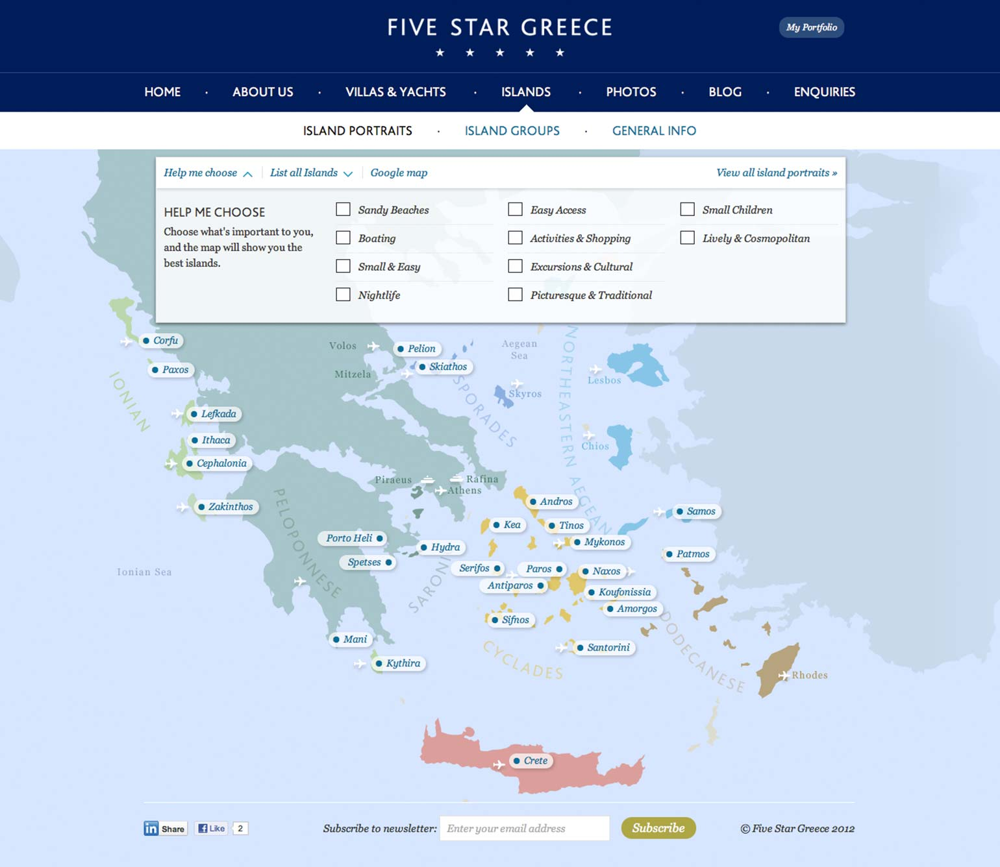
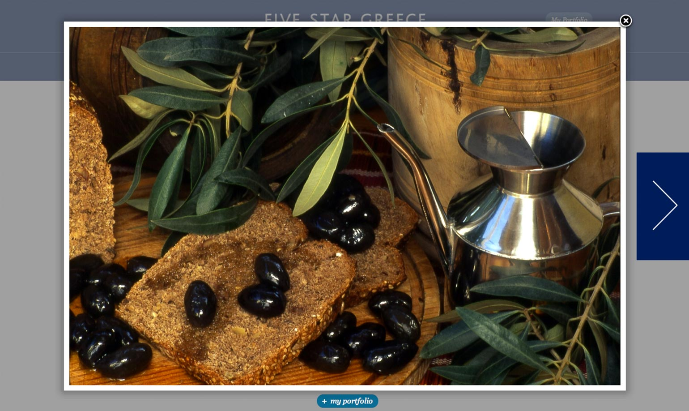

If you want to see how the other half holiday, Five Star Greece is the place to look. The service helps connect owners of luxury villas and yachts in greece with holiday makes that have a taste and a budget for the finer things in life.
I chose Wordpress to power the site since it's a well documented CMS and the support community is very active, meaning the client wasn't tied Applied Works for ongoing maintenance. The column based layout meant that adding content wasn't as straight forward as copy and pasting text straight into the Wordpress text editor. To avoid having the site owner learn a set of cumbersome short tags, I made heavy use of custom post types and custom post fields.

A nice feature of the site lets users filter the greek islands to their taste. So anyone looking for an Island that is child friendly, with sandy beaches and plenty of activities can single out islands suited to them in three easy clicks.
The map works across all browsers, but subtle niceties such as smooth CSS3 transitions, rounded corners and box shadows degrade gracefully in older browsers.

Throughout the site, users can bookmark islands and images they like. They can share these with friends and also include them in their contact enquiries via the contact form. Contacts had to be integrated into the site owners existing lead management system.